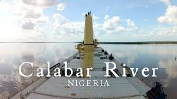
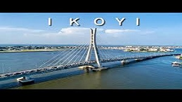

Rafting Trips
Calabar River
Nestled in the heart of southeastern Nigeria, the Calabar River flows gracefully, weaving through lush landscapes that radiate natural beauty. Its banks are adorned with tropical greenery, and the river's waters reflect the vibrant culture of Calabar city. Known for its historical significance and serene beauty, the Calabar River invites travelers to experience a tranquil journey enriched by the captivating essence of Nigeria's Cross River State.
Kaduna River

Kaduna, a lively city in northern Nigeria, showcases a unique blend of cultural heritage and modern development. Known for its historical landmarks, its a central hub for trade, education, and industry. Kaduna’s diverse communities and bustling markets enrich its vibrant atmosphere.
Lagos River, Ikoyi
Lagos, Nigeria’s most populous city and economic powerhouse, buzzes with constant activity. Its rich cultural scene, renowned beaches, and booming nightlife attract visitors and residents alike. Known for its innovation, Lagos stands out as a key center for finance, arts, and entertainment. .
| River | Starting Point | Duration & Length | Time Slots | Price | |
|---|---|---|---|---|---|
| Calabar | Interstate, town and resorts | 4 hours, 7 km | 8:00 AM, 11:00 AM, 2:00 PM, 4:00PM | 10 Thausands N - 50 Thausands N per person | |
| Kaduna River | Interstte and town travelers | 2.6 hours, 17 km | 8:00 AM, 11:00 AM | 10 Thausands N - 50 Thausands n per person | |
| Lagos River | Lagos River | 2 hours, 5 km | Morning, Afternoon & Evening seasions | 20 Thausands N - 180 Thausands N per person |